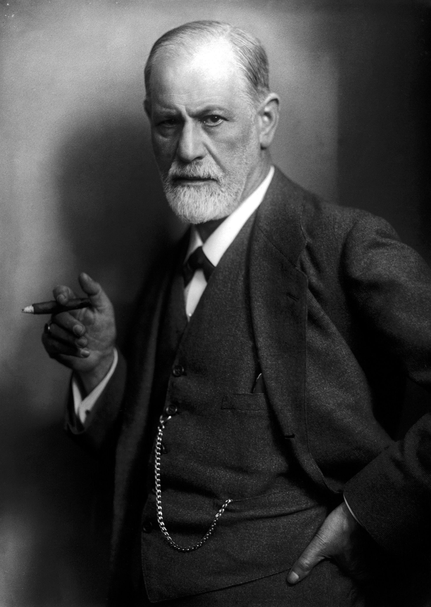

Sigmund Freud
O Criador da Psicanálise e a Descoberta do Inconsciente
1856 — 1939 | Viena, Áustria
Meu nome é Sigmund Freud. Nasci em 1856, em Freiberg, em uma época na qual a mente humana ainda era vista apenas sob a ótica da biologia e da consciência visível. Desde cedo, incomodei-me com a ideia de que nossas escolhas e sofrimentos fossem explicados apenas pela lógica racional ou por lesões físicas no cérebro.
Foi na Medicina e na Neurologia que comecei minha jornada, mas percebi que a ciência tradicional deixava muitas lacunas. Passei, então, a me perguntar: o que acontece quando o sofrimento humano não tem uma causa orgânica evidente? O que a mente esconde por trás dos sintomas, dos sonhos e dos lapsos de linguagem?
Essa pergunta me levou a investigar os meandros do inconsciente. Junto a colegas como Josef Breuer e a partir da escuta atenta das minhas pacientes, desenvolvi o método da livre associação e criei a Psicanálise. Ao ouvir o que as pessoas diziam quando não estavam tentando ser racionais, percebi que desejos reprimidos, traumas de infância e conflitos internos permaneciam vivos dentro delas, moldando seus comportamentos sem que percebessem.
Fomos forçados a reconhecer que a nossa sexualidade, nossas defesas psíquicas e o modo como lidamos com a dor e a cultura são guiados por forças inconscientes que muitas vezes tentamos ignorar.
Essas ideias provocaram fortes resistências na sociedade e no meio acadêmico da minha época. No entanto, o avanço da Psicanálise ajudou a evidenciar que o sofrimento psíquico não era um sinal de fraqueza, mas o resultado de tensões profundas entre os nossos impulsos mais primitivos e as exigências da civilização. Minha trajetória me mostrou que a investigação da mente poderia ir além dos sintomas aparentes e revelar as estruturas mais profundas da subjetividade.
"Se grande parte do que nos move é motivada por forças que desconhecemos, quanto do que chamamos de 'vontade própria' é realmente consciente e quanto é apenas o eco de nossas memórias e desejos reprimidos?"
Eu sou Sigmund Freud, médico, criador da Psicanálise e um investigador que dedicou a vida a compreender o inconsciente e os mistérios da alma humana. Porque, para compreender o homem em sua totalidade, precisamos ter a coragem de olhar para aquilo que ele próprio tenta esconder de si mesmo.